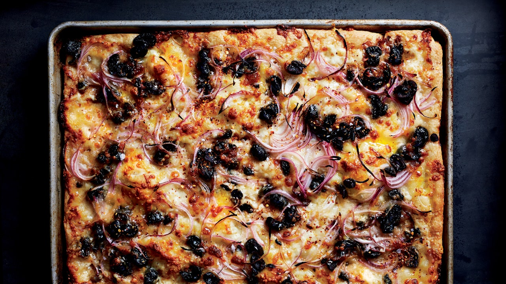

Pizza Chef
Ingredients
- 12 ounces fresh mozzarella, grated (about 2½ cups)
- 4 ounces sharp provolone cheese, grated (about 1 cup)
- 1½ cups Fresh Tomato Pizza Sauce (click for recipe)
- ¼ red onion, thinly sliced
- ½ cup Sicilian oil-cured black olives, pitted, coarsely chopped
- Crushed red pepper flakes (for serving; optional)
Preparation
- Place a rack in lower third of oven and preheat to 525° or as high as oven will go.
- Once dough has risen in baking sheet
- top with mozzarella and provolone
- dot pie with tomato sauce
- top with onion and olives
- Bake until golden brown and crisp on bottom and sides, 20–30 minutes.